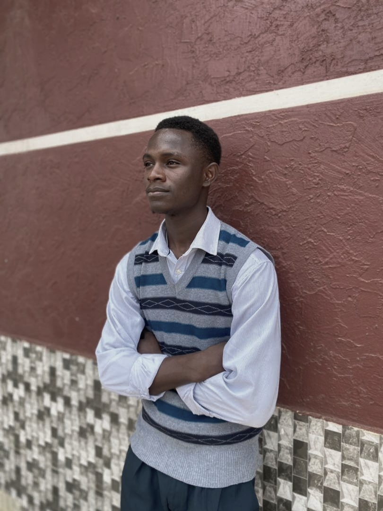

Dr. Ernest Nnabuihe
HOD, CSPCS
Prof Adetayo Olorunlana
Lecturer, CSPCS

Dr. Christian Oseghale
Lecturer, CSPCS
Oseghale, Christian Osemuyi, PhD, is my name. I Lecture at Caleb University, Imota, Lagos, Nigeria. I hold a Doctor of Philosophy (PhD) in political science (peace and conflict studies), a Master of Philosophy (MPhil) in political science (Peace and Conflict Studies), a Master of Science (MSc) in Peace Studies and Conflict Resolution and a Bachelor of Science in Social Work (BSW) degree. I am also a member of professional bodies such as the Fellow Forensic Investigators’ Society, Nigeria (FISN); National Association of Social Workers (NASoW); Society for Peace Study and Practice (SPSP); Alternative Dispute Resolution (ADR) and Nigeria Association of Patient and Preparatory Medicine Dealers (NAPPMED). My areas of expertise include Research, social work, and conflict resolution with an emphasis on traditional models of conflict resolution, resource governance, human rights and security, peacebuilding and mediation.

Dr. Olayinka Onayemi
Lecturer, CSPCS
Olayinka Modupe Onayemi holds a Doctor of Philosophy in Sociology (Criminology), with a special bias for the study of Crime, Deviant Behavior and matters of security. She is an academic with a research interest in victimology, child protection and security. From these distinct areas of interest, she carved a niche for herself to study crimes, deviances, antisocial behaviors and injustices on the corridor of child protection agencies and structures, as well as, studying infringements on the rights of children in custody of individuals, organizations and within cultures. She is a member of Nigeria Society for Criminology and a Fellow of Africa Early Childhood Network, and Fellow of Forensic Investigators’ Society.
Dr. Diyeli Aigbe
Lecturer, CSPCS
Dr. Diyeli Aigbe is an experienced criminologist and security professional with over 20 years of expertise in research, criminology, and security studies across Nigeria and Africa. He is a dynamic academic and practitioner who combines rigorous scholarship with practical field experience, enriching the academic environment with real-world insights.
At Caleb University, Lagos, Dr. Aigbe lectures, supervises research, mentors students, and contributes to programme development. He has published widely, presented at international conferences, and provided expert analysis on security challenges across Africa through various media platforms. His leadership experience in Africa’s security sector reform and active involvement with the American Society for Industrial Security (ASIS International) highlight his professional capacity and global relevance.
Recognized for his intellect, mentorship, and dedication, Dr. Aigbe embodies the qualities of a committed teacher, impactful researcher, and versatile security professional who continues to add significant value to academia and community service.

Dr. Adi
Lecturer, CSPCS
Mr Ajomale
Lecturer, CSPCS
Mr. Festus Funmileyi Ajomale hold B.sc (Hons) in sociology from Ondo State University Ado Ekiti where he emerged as the best overall student for that session. M.sc in sociology from University of Ibadan, Ibadan and currently running his Ph.D in criminology and security policies at Caleb University ,Imota Lagos. He is a Fellow of Criminology and Security Association of Nigeria (fcss),Fellow Forensic Investigators' Society of Nigeria (FFISN) and many other organizations. .He is a prolific writer, a Researcher and a seasoned Sociologist,Criminologist and a teacher .He has great passion for academic and seal to excel and impact positively on people. He has taught at various institutions of learning and still actively teaching with years of experiences. He has many papers to his name and collaborations with other scholars.
Mrs Austin Olowo
Secretary, CSPCS
Accomplished and energetic professional in secretarial practice, business administration, and financial management with a solid history of achievement in both private and public institutions.  Motivated leader with strong organizational and prioritization abilities. Areas of expertise include writing, computing, organizing, accounting, reading, listening, marketing, as well as excellent communication and time management skills.  Handles tasks with accuracy and efficiency with exceptional results.
Tijani Usman
President, CSPCS
Tijani Usman is a student and the President of the Department of Criminology, Security, Peace, and Conflict Studies at Caleb University. He is an enthusiastic leader who is committed to the growth and development of his department, his institution, and any community he belongs to.
He possesses digital skills in cybersecurity, ethical hacking, and data analysis, and has collaborated with various organizations and bodies as a reliable solution provider. His interests as a budding security expert include examining the role of social media in violence and insecurity, the impact of disinformation on economic security, and corporate rivalry, among others.
Tijani aspires to contribute to global peace and security as a future member of the United Nations. His most used phrase, “We will figure it out,” reflects his optimistic and solution-driven approach to challenges. Outside academics, he enjoys engaging in productive conversations, watching movies, and resting.
Okomba Christiana
Vice President, CSPCS
EOkomba Christiana Ihuoma is a committed student of Criminology and Security Studies, recognized for her passion for academic excellence, personal growth, and lifelong learning. She combines strong intellectual curiosity with practical experience, and is driven by perseverance and a desire to make meaningful contributions. She aspires to use her knowledge to advance justice, security, and human development.
Kazeem Hafiz
General Secretary, CSPCS
"Chillin' and vibin'! I'm a laid-back individual who loves catching Z's, snacking on good food, and getting lost in TikTok videos. When the vibes are right, you can find me socializing and having a blast with friends. Life's too short, so I'm just taking it easy and enjoying the ride”
Oladipupo Temidayo
Academic Director, CSPCS
Dayo is the Academic Director, with a strong passion for knowledge, mentorship, and academic excellence. He is deeply committed to fostering learning environments that empower students to achieve their full potential. Known for his love of reading, Dayo continuously seeks to broaden his intellectual horizons, staying informed and inspired across diverse fields of study.Beyond his administrative role, Dayo finds fulfillment in helping others refine their ideas and express themselves clearly through writing. His ability to guide, support, and nurture academic growth has made him a trusted mentor and resource for students and colleagues alike. With a blend of leadership, empathy, and intellectual curiosity, Dayo continues to make a meaningful impact in his academic community.
Tadese Ewaoluwa Rhoda
Social Director, CSPCS
Ewa is the Social Director of the Department, known for her creativity, energy, and people-centered approach. She is passionate about building connections, organizing engaging events, and fostering a sense of community among students. With her strong interpersonal skills and commitment to inclusivity, Ewa ensures that departmental activities are not only enjoyable but also impactful, creating spaces where everyone feels welcome and involved.

Osose David
Public Relations officer, CSPCS
Osose David is a passionate advocate for equality and fairness, with a strong commitment to fostering inclusive and balanced spaces. He thrives in intellectual and problem-solving discussions, where he brings creativity, critical thinking, and a solutions-driven mindset. His dedication to knowledge-sharing and innovation is evident in his leadership roles and entrepreneurial pursuits. He is the founder of General Labs, an emerging web design brand focused on delivering impactful digital solutions, as well as the creator of The General Podcast, a platform dedicated to exploring and understanding issues related to crime, peace, and security. Beyond his professional initiatives, Osose David enjoys building networks and connecting with people from diverse backgrounds and skill sets, believing that collaboration is key to achieving sustainable growth and meaningful change.
Chukwuma Abuoma Praise
Financial Secretary, CSPCS
Chukwuka Abuoma Praise has been appointed as the Financial Secretary for the Department of Criminology and Security Studies at Caleb University. He brings over four years of experience in financial management and meticulous record-keeping to this critical role. His expertise is essential for maintaining the fiscal integrity and transparency of the department's operations, which include specialized programs, research initiatives, and academic resources.
Mr. Abuoma is tasked with overseeing all financial records, tracking budgets, and implementing efficient systems for managing departmental funds. His diligent approach ensures that financial resources are accurately allocated and managed, directly supporting the department's mission to advance education and research in criminology and security studies.
Paul Nmebo Lilybeth
Treasurer, CSPCS
My name is Lillybeth, and I am passionate about creativity, learning, and self-development. I have a strong interest in music and storytelling, which I explore through both listening and watching series that broaden my perspective on different cultures and human experiences. Beyond entertainment, I value reading as a tool for personal growth, knowledge acquisition, and critical thinking.
Fowowe Oluwaduunmininuayo
Social Media director, CSPCS
Dunmi is a criminology student who combines academic dedication with creativity and style. She is passionate about driving community change and committed to making a positive impact through both her studies and engagements. Known for her approachable personality and strong sense of purpose, Dunmi brings a unique balance of intellect, compassion, and confidence to every space she occupies. She enjoys contributing to meaningful initiatives while maintaining a fresh and inspiring outlook that motivates those around her.
Ijiyemi Oluwatofunmi
Creative director, CSPCS
Hi everyone, I'm Ijiyemi Elizabeth Oluwatofunmi, your Creative Director for this session. My main goal is to bring innovative ideas and creativity to the forefront, ensuring our projects are visually stunning and effective. If you have any creative ideas, need design support, or just want to brainstorm, please don't hesitate to reach out. I'm excited to collaborate with you all and make this session a creative.
Ubah Gregory Kamsiyochukwu
Sports Director, CSPCS
Hello, I'm Ubah Kamsiyochukwu Gregory, a dedicated young athlete and student of Criminology and Security Studies. As the Sport Director of the Criminology department, I'm passionate about enhancing athletic performance and creating opportunities for students to grow and excel. My goal is to foster a culture of excellence, inclusivity, and teamwork, empowering every student to reach their full potential.
Adebogun Elizabeth Oluwademilade
Welfare Director, CSPCS
Hi guys,
I’m Adebogun Elizabeth, your Welfare Director for this session. My main goal is to make sure everyone’s well-being is taken care of and that no one feels left out. If you ever have any concerns, suggestions, or just need someone to talk to, please feel free to reach out to me anytime.
Looking forward to working with you all and making this session a smooth and enjoyable one
Jalla Alero
Asst. General Secretary, CSPCS
Jalla Alero, a 200-level student of Criminology, is the newly elected Assistant General Secretary. She is dedicated to effective communication, teamwork, and serving the best interests of her colleagues.
Bamiduro Oluwatobi Esther
Asst.Sport Director, CSPCS
Bamiduro Oluwatobi Esther is a 300-level Criminology student and the Assistant Sport Director in her department. She combines her passion for academics with her love for sports, actively promoting teamwork, leadership, and student engagement. Her academic focus is on cybercrime investigations, forensic analysis, and corporate law. With a deep commitment to justice and advocacy, Esther aspires to become a corporate lawyer while continuing to inspire others both in academics and sports.
Madu Walkili Kucheli
Asst. Social Director, CSPCS
I'm Madu-Wakili Kucheli Joy, your Asst. Social Director for this session. My main goal is to assist the Social Director in making fun activities for the department, showing that we have a fun side behind every education curriculum.
Araba Bibire Emmanuella
Asst. Public Relations officer , CSPCS
My name is Araba Bibire, I'm from Ogun state,am currently studying criminology and security studies at Caleb University.I am dedicated and always looking for opportunities to expand my skills.
Funzi Blessing Mbala
Asst. Welfare Director , CSPCS
My name is Funzi Blessing Mbala,
a second year criminology student at Caleb university. I am passionate about resolving crimes among juveniles and preventing criminal behavior in our various societies, I am excited to contribute to the field and make a positive impact.